PaynEat ERP · open source
From supplier to plate.Every lot accounted for.
The back office for restaurant chains that run their own supply chain — built in public, starting with what everything else depends on: stock numbers you can trust.
Walking skeleton: the stock ledger, master data and access control work today. Purchasing, production and transfers are next.
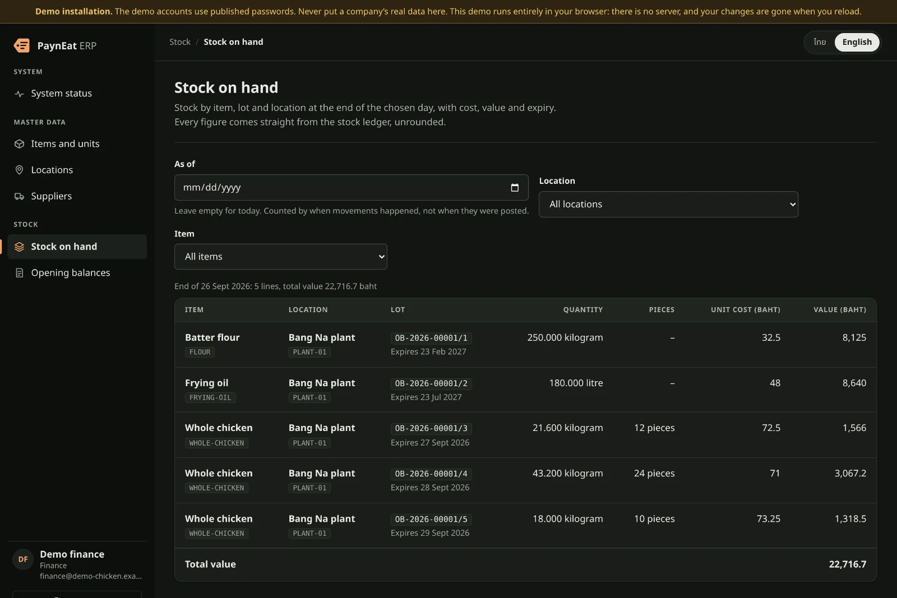
Why PaynEat ERP
Built for the problems a growing chain actually has.
Every answer below works today, on the public demo. Every picture is the real console, on the fictional chain’s data.
Stock ledger
Stock numbers everyone believes.
Spreadsheets get overwritten, the plant and the branches never agree, and nobody can say what the stock was last Tuesday.
Every movement is a ledger entry that nothing can change — the database itself refuses. A mistake is corrected by a reversal that stays next to the original. Stock on hand is read as of any business date, with the cost and value of every lot, in exact decimals.
- Append-onlyLedger entries are never updated or deleted.
- As of any dateCounted by when a movement happened, not when it was typed.
- ExactDecimals, never floating point: 22,716.7 baht means 22,716.7.
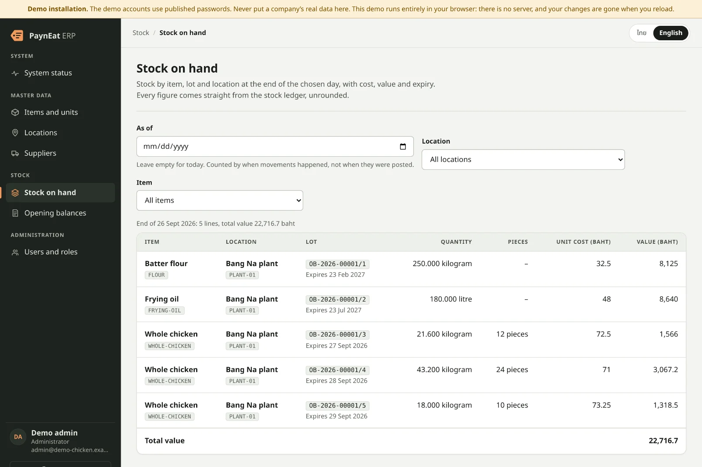
Try it: Open “Stock on hand” and set “As of” to two days ago. Open the demo
Opening balances
Go live without the spreadsheet chaos.
The first day on a new system is when bad data gets in: half a drumstick, a lot that has already expired, a number typed twice.
An opening balance is a draft until you post it, and it is checked line by line first. Posting turns every line into a lot in one transaction — or nothing at all. A posted document is final; a reversal, with its reason, is the only way back.
- Checked per linePieces have no decimals; an expired lot is refused.
- All or nothingEvery line becomes a lot in one transaction.
- Traceable from day oneOB-2026-00002, and its lots /1, /2.
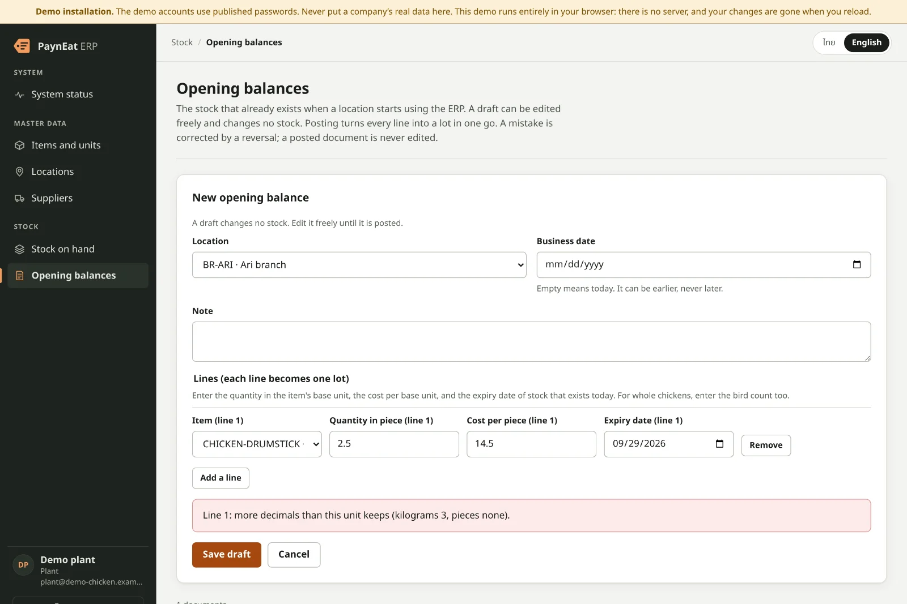
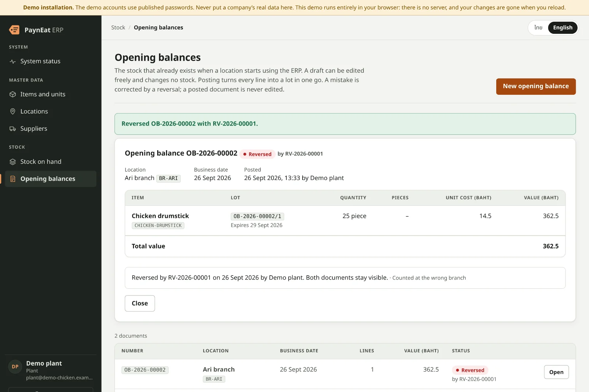
Try it: Sign in as plant, press “New opening balance” and enter 2.5 drumsticks. Open the demo
Master data
One set of master data. Every branch, every system.
Each branch names the same chicken differently, suppliers sell by the bag, the kitchen counts by the piece, and the POS keeps its own list.
An item has one base unit and exact purchase units — 1 bag = 25 kilograms — and a whole chicken is kept by weight and by the bird. Location codes are shared with PaynEat POS and Cwork and fixed once used; every change is a numbered master data version a POS pulls. A supplier’s tax ID is checked by its check digit.
- Units that convert exactlyA factor is always above zero; a base unit never changes.
- Versioned for the POSEvery change is the next version, in order, with no gaps.
- Caught at entryA mistyped Thai tax ID fails its check digit.
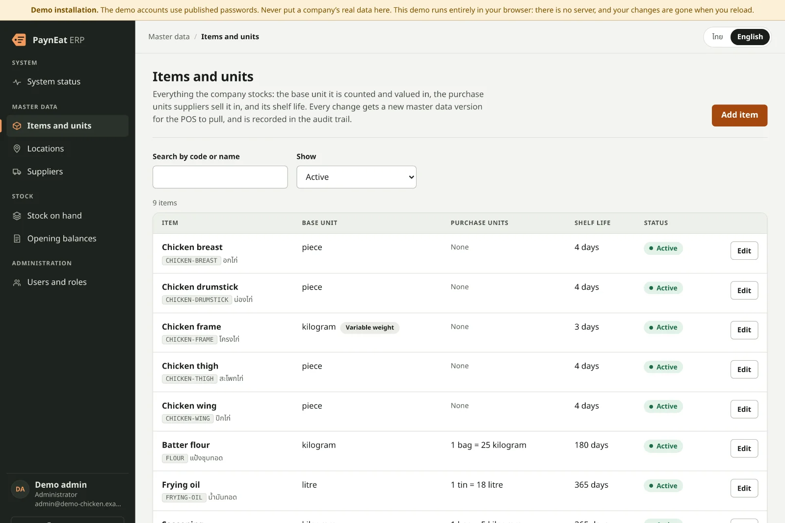
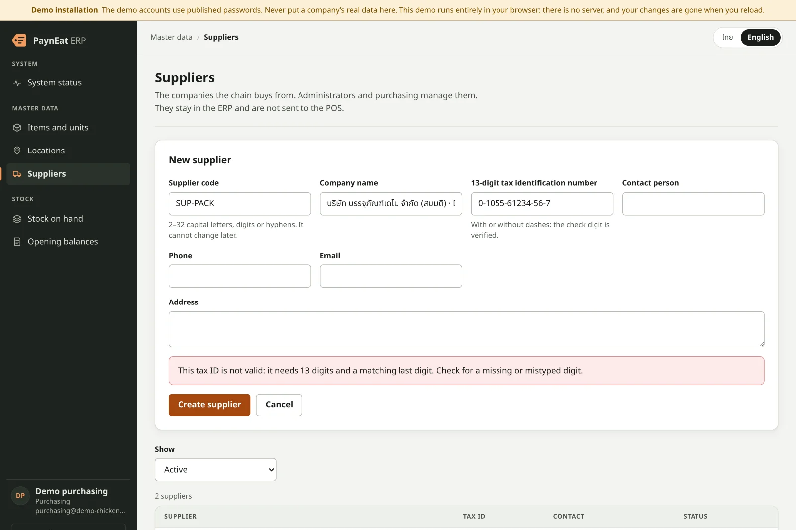
Try it: Sign in as purchasing, press “Add supplier” and mistype one digit of the tax ID. Open the demo
Access and audit
The right people. Only the right people.
Everyone shares one login, anyone can change anything, and when something goes wrong there is no record of who did it.
Seven roles, enforced by the API — not just hidden buttons. Administrators sign in with a second factor and single-use recovery codes; five wrong tries lock an account for 15 minutes; the last administrator keeps the role. Every change and every refused sign-in lands in an append-only audit trail, with who, when and the request’s correlation id.
- Seven rolesFrom purchasing to finance; a user may hold several.
- Second factorAn authenticator code for administrators, with recovery codes.
- Segregation of dutiesNobody approves their own document — arriving with the first approval.Planned · #8
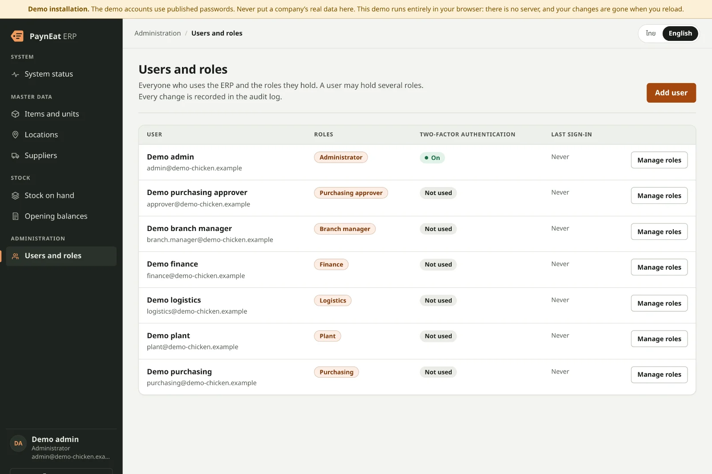
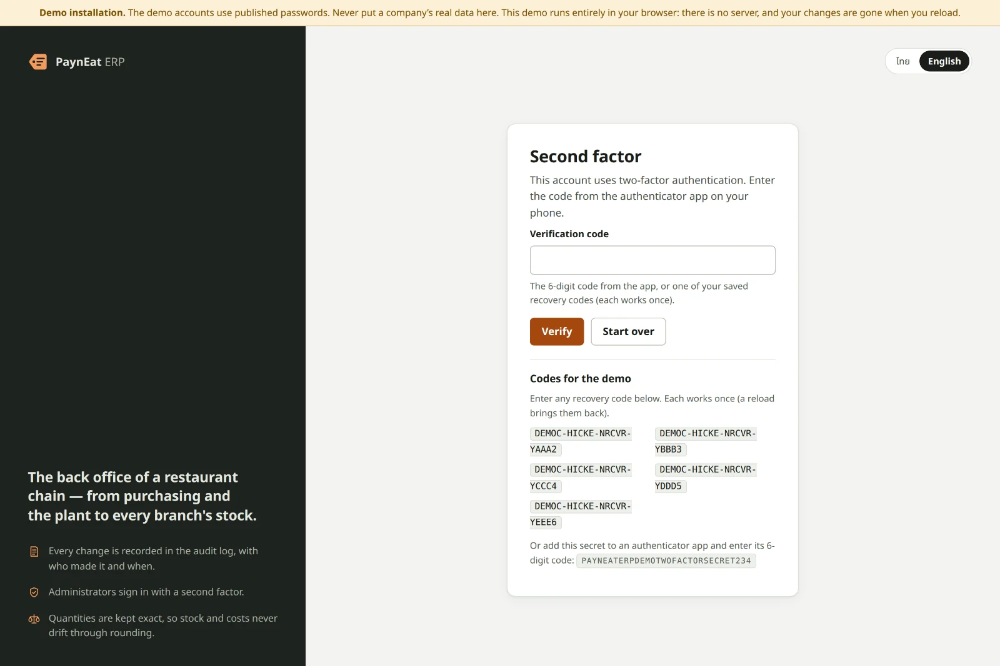
Try it: Sign in as admin with one of the recovery codes the sign-in screen shows, then open “Users and roles”. Open the demo
Observability
When something breaks, you’ll know why.
“The system is slow” — and nobody can find the one request that failed.
The console asks the API and its database whether they are healthy and, when one is not, shows the correlation id of that check — the same id as the API’s log line. Every request is one structured JSON log line under the ecosystem’s telemetry contract, and Prometheus metrics count requests, refused sign-ins and postings. Emails, passwords and codes never reach a log.
- Health at a glanceThe API and its database, checked on demand.
- One id, end to endThe id on the screen is the id in the log.
- Metrics built inRequests, refused sign-ins, postings by document type.
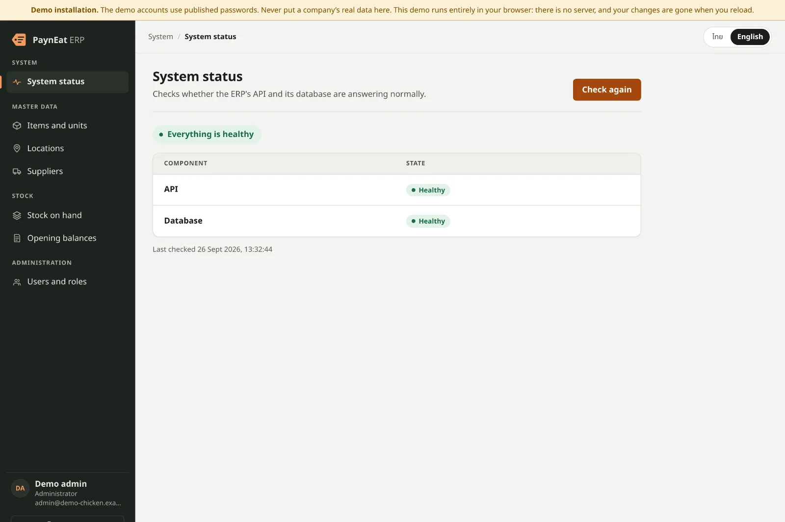
Try it: Open “System status”. On a Docker install, stop the database and press “Check again”. Open the demo
Any device
At the desk, on a tablet, in your pocket.
Branch managers are on the floor, not at a desk — and not everyone reads English.
The console fits a desktop, narrows its menu to icons on a tablet and turns every table row into a card on a phone, in light or dark mode, in Thai or English. You can try all of it now: the public demo runs the backend’s own rules in your browser, with no server.
- One consoleDesktop, tablet and phone.
- Light and darkFollows the device.
- Thai and EnglishOne click, remembered by the browser.
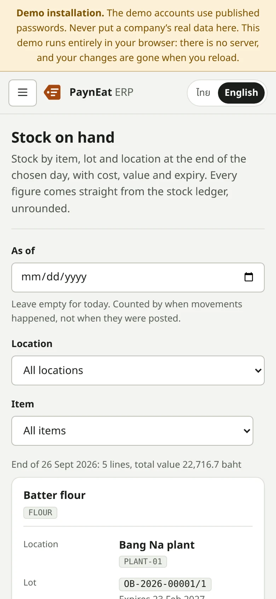
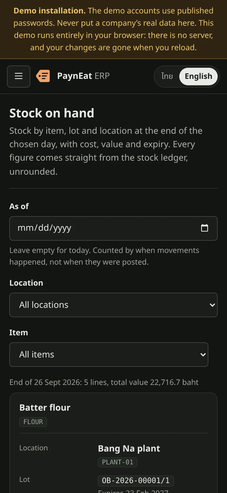
Try it: Open the demo on your phone. Open the demo
Roadmap
What’s cooking next.
Built in public, one GitHub issue at a time. None of this is in the demo yet.
- #8Stock adjustments with segregation of dutiesIn progress
- #9POS integration contract and POS registrationPlanned
- #10Purchase orders with an approval thresholdPlanned
- #11Goods receipts with inspection and lotsPlanned
- #13Production orders: measured yield and lot genealogyPlanned
- #14Transfers through in-transitPlanned
- #23Traceability and the recall reportPlanned
- #24Stock countsPlanned
Open source
Free for one chain. For good.
The Community edition is Apache 2.0 and complete for one chain, with no limit on users, locations or data. A paid Enterprise edition for scale and regulation starts after the first release. Food safety, data integrity, basic security, access to your own data and the upgrade path are never behind a paywall.
See it for yourself.
The whole console, on the fictional chain, with nothing to install.